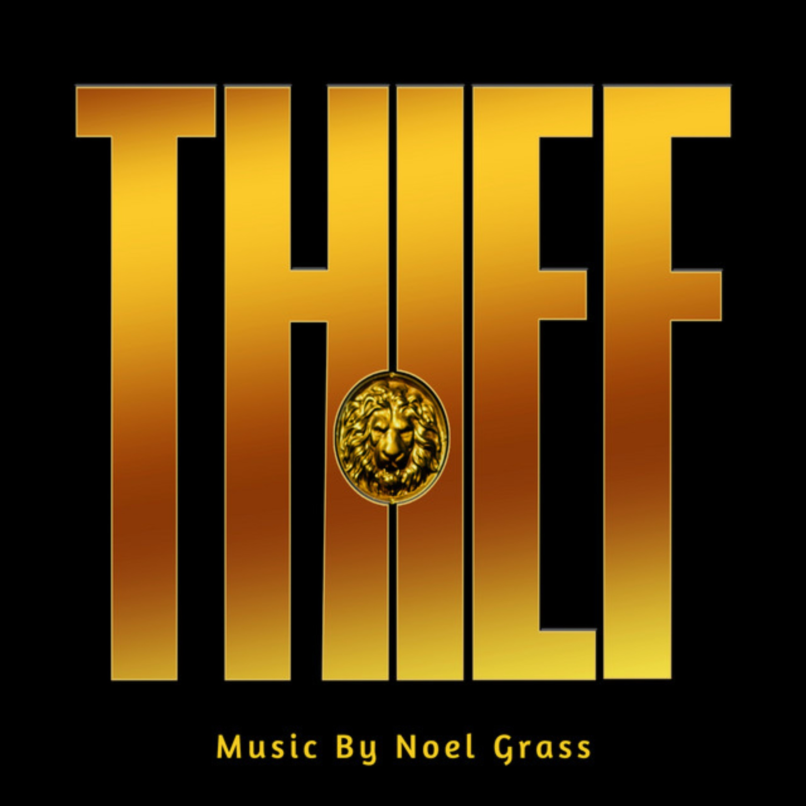
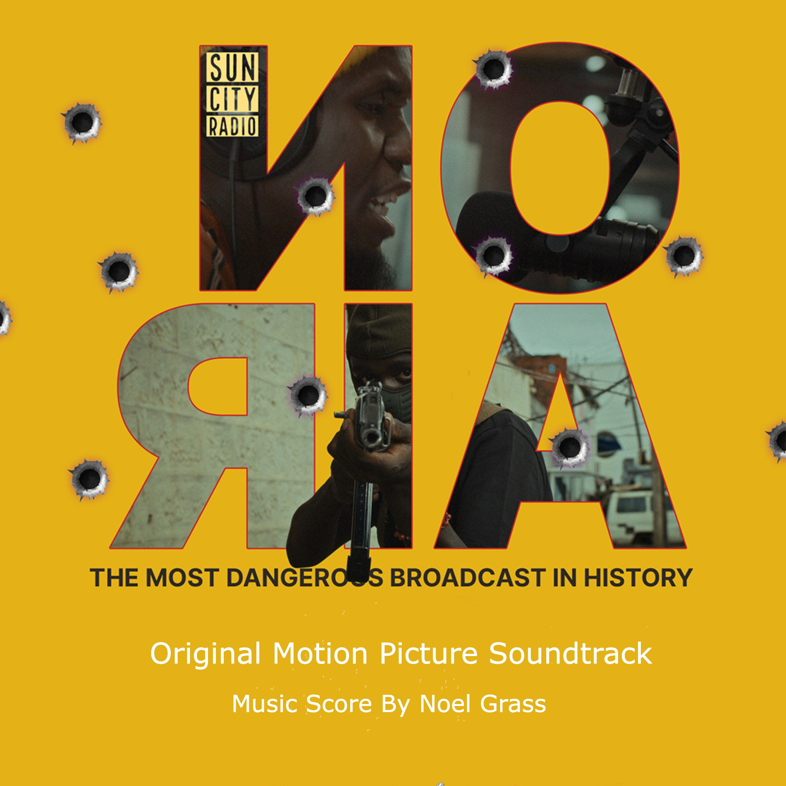
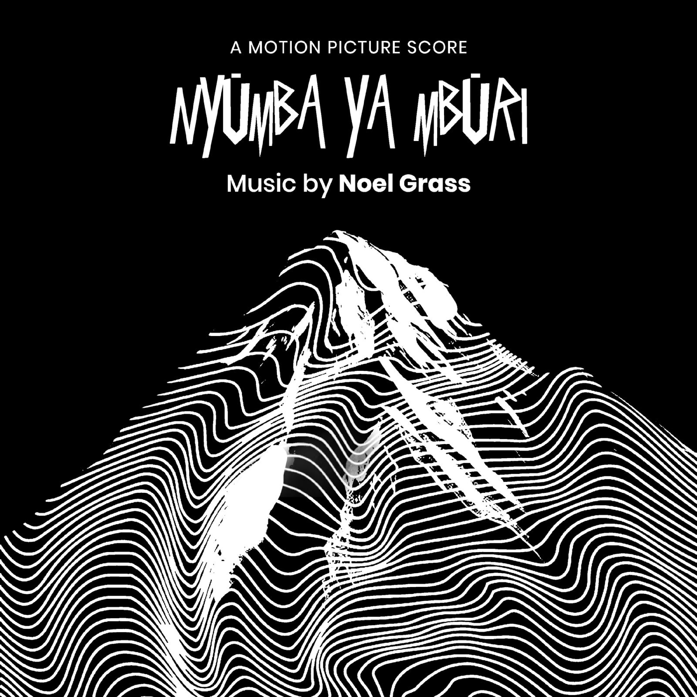
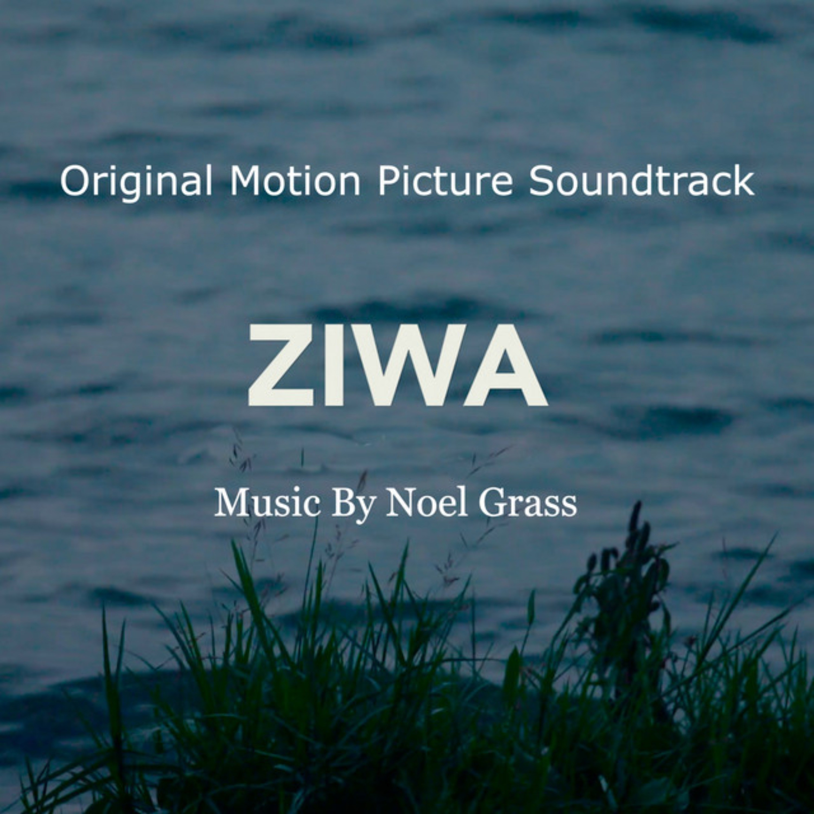
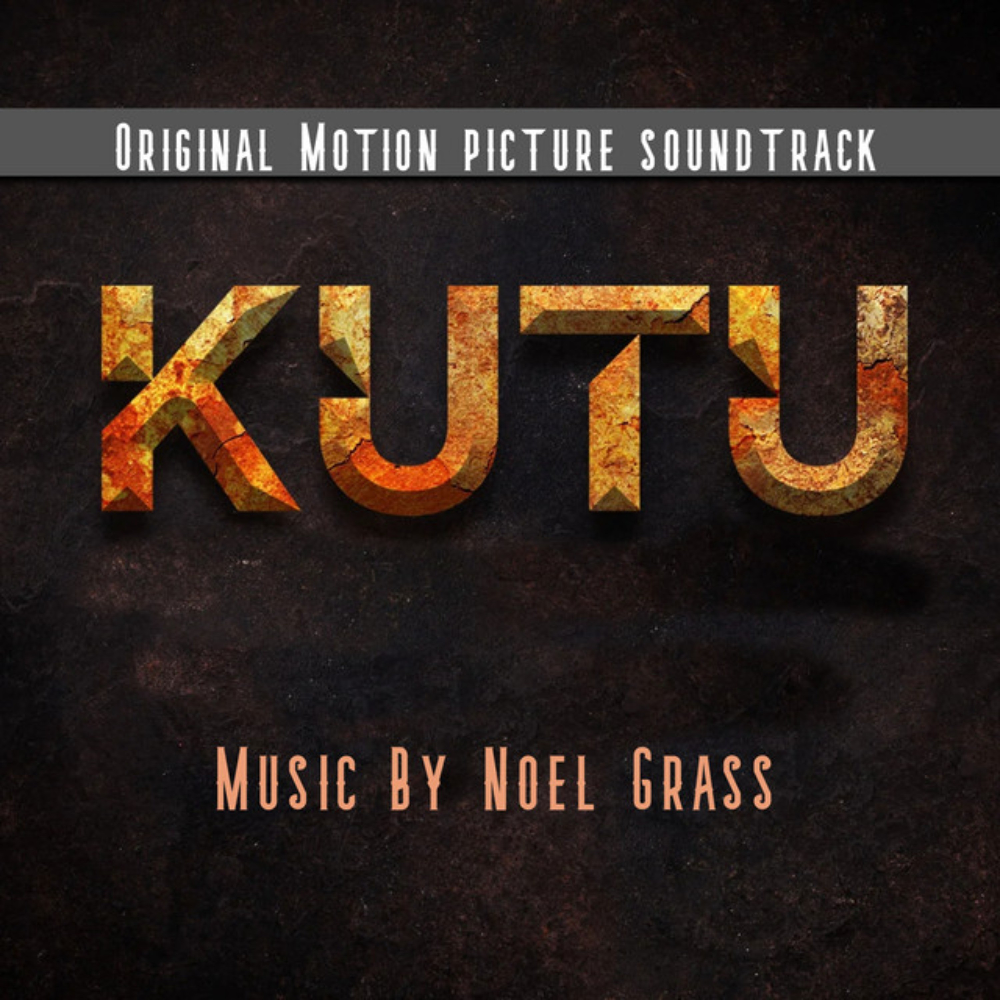
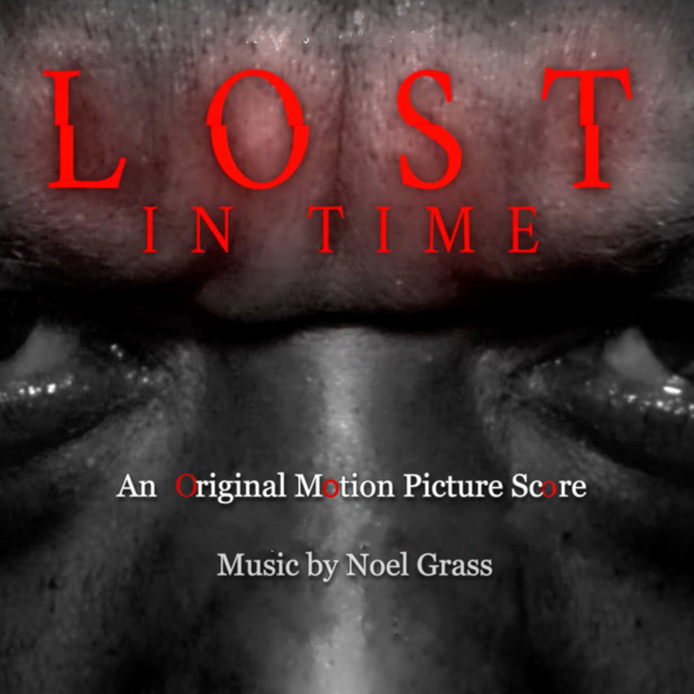
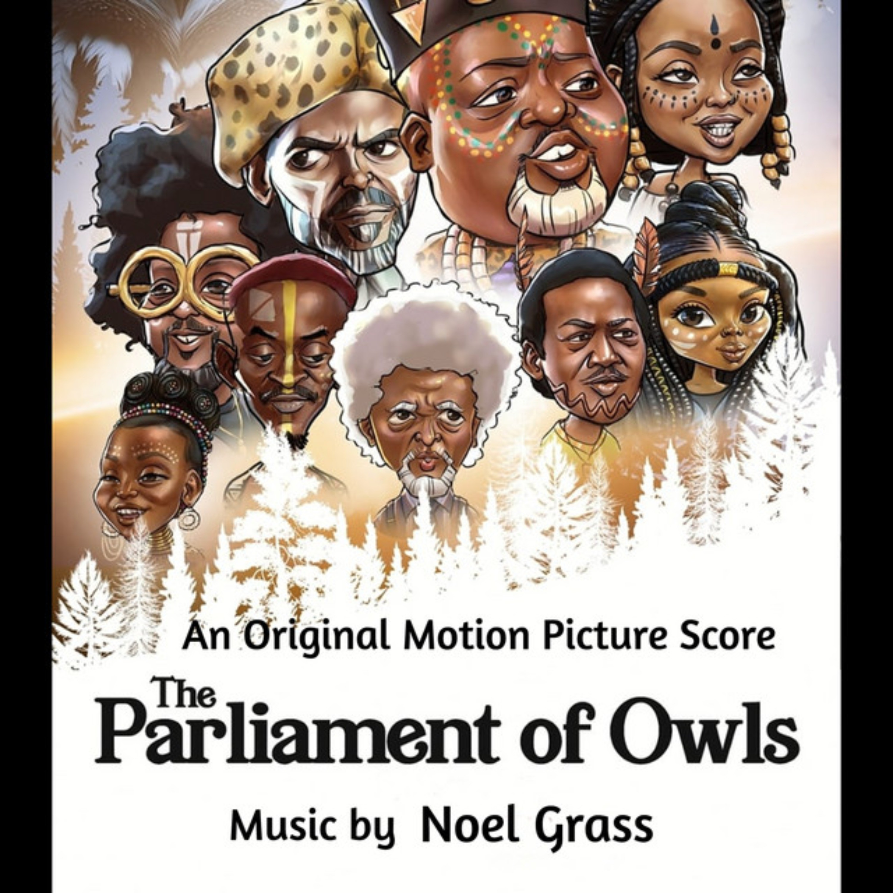

Gallery
Original Film Composition & Soundscapes for MediaThis work exists to serve visual narrative as an original film composer and music scorer. It is an act of shared vision, translating the emotional core of films into intentional sound design.
My goal is absolute clarity for the motion picture soundtrack to function as an unseen character within the frame, driving the narrative forward through musical arrangement and orchestral themes.
Commercial Audio & Sound DesignBeyond cinematic features, I compose instrumental music, background audio tracks, and atmospheric scores for independent directors, creative agencies, and visual media production houses.
(Click on the Image to Explore the Sounds)

Thief

On Air

NYUMBA YA MBURI

Ziwa

Kutu

Lost in Time

The Parliament of Owls